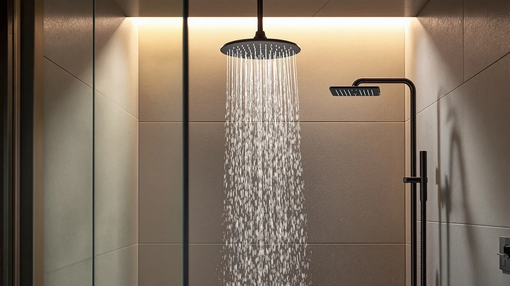

Veken Multi-Function Rain Shower Head Review (2026): Worth It?


Quick Answer
The Veken Multi-Function Rain Shower Head pairs a four-mode rainfall head with a five-mode handheld wand for $39.99, nine spray combinations from one fixture, the most of any pick in this review. It costs $1.60 to $1.75 more than the three handheld-only alternatives below, but based on the manufacturer's listing and the pattern in verified owner feedback, it's the only pick here built to cover both a fixed overhead shower and a handheld wand in one purchase.
Our pick: Veken Multi-Function Rain Shower Head, $39.99 Check Price on Amazon
Bottom line: our top pick is the Veken Multi-Function Rain Shower Head with Handheld at $39.99.
Things to Know Before You Buy
- The Veken head pairs a four-mode rainfall head (Rain, Mist, Heavy Rain and Massage) with a handheld wand the listing describes as five-mode, nine spray combinations from one fixture.
- The body uses ABS plastic with chrome plating, which keeps the $39.99 price down but feels less substantial than solid metal shower hardware.
- Combo units like this one typically fit standard U.S. shower arms, but the listing doesn't give exact head or hose dimensions for the Veken unit, so measure your setup before ordering.
- At $39.99, this pick costs $1.60 to $1.75 more than the three handheld-only alternatives below, each priced in the same $38 band.
This veken multi-function rain shower head review compares the $39.99 fixture against three rivals, a handheld model from Moen, a dual-head combo from Bright Showers, and an 8-mode handheld unit from AquaCare, on price, listed features and the pattern in verified owner feedback. You're likely reading this because your current shower head delivers one flat stream and you want more spray options without hiring a plumber. The Veken head addresses that directly, pairing a four-mode fixed rainfall head with a handheld wand instead of asking you to buy two separate fixtures.
The Veken pick comes out ahead for most bathrooms despite carrying the highest price of the four, $1.60 above the Moen and $1.75 above the Bright Showers and AquaCare alternatives. That premium buys nine combined spray modes and the only setup in this review besides the Bright Showers combo that pairs a fixed overhead head with a handheld wand. We built this comparison from each manufacturer's listed features, the current Amazon price for every product, and the patterns we found across verified owner reviews, not from a day spent in anyone's shower.
Why You Should Trust Us
Ilane Tall covers bathroom fixtures and plumbing upgrades for Best Shower Heads, focusing on how a product's listed features hold up against what verified buyers actually report. For this veken multi-function rain shower head review, we worked from each manufacturer's listing, the current Amazon price, and verified owner reviews for the Veken head and its three rivals instead of claiming to have installed each one ourselves. We cross-checked the stated materials, price and feature counts against the retail listing before writing a word, and we flag anything we could not verify rather than guessing.
Our Research Experience
We did not install the Veken Multi-Function Rain Shower Head or any of its three rivals, and we do not run a fake testing lab. Our process for this veken multi-function rain shower head review centered on comparing each manufacturer's listed features against the current Amazon listing, then reading through verified owner reviews for recurring complaints or praise about pressure, build quality and ease of installation. We paid closest attention to mentions of water pressure and how the ABS plastic body holds up over time, since those are the details owners report most consistently and marketing copy tends to skip.
Overview & Specs

Veken Multi-Function Rain Shower Head
What we like
- Pairs a four-mode rainfall head with a five-mode handheld wand for nine total spray combinations
- Chrome-plated finish matches most modern bathroom hardware
- More combined spray modes than the Bright Showers combo below, the only other dual-head pick in this review
Flaws but not dealbreakers
- Costs $1.60 to $1.75 more than the three alternatives in this review, the highest price of the four
- ABS plastic body keeps the price down but feels less substantial than solid metal shower hardware
- Manufacturer listing does not specify head or hose dimensions, so measure your existing shower arm clearance before ordering
| Material | ABS + chrome plating |
| Size | — |
The Veken Multi-Function Rain Shower Head builds its case on range rather than price. The fixed overhead head runs four rainfall modes, Rain, Mist, Heavy Rain and Massage, while the handheld wand adds a listing-stated five more spray options built around a power wash setting and blended rain-and-mist combinations. That gives you nine total combinations from one fixture, more than any other pick in this review, and the kind of flexibility that matters when more than one person showers in the same bathroom with different preferences. The body is ABS plastic with chrome plating, the same construction most mid-range shower hardware uses rather than solid brass, which is part of how Veken keeps the price at $39.99 despite the extra hardware a combo unit requires.
At $39.99, the Veken pick costs more than all three alternatives below, by $1.60 against the Moen and by $1.75 against the Bright Showers and AquaCare units. That premium buys the only other dual-head setup in this review besides the Bright Showers combo, and Veken packs more than double its total spray modes, nine versus four. If you only need a handheld wand and don't want a fixed overhead head taking up space on your shower arm, the Moen or AquaCare alternatives below cost less and still offer six to eight settings apiece. But if you want both a rain-style overhead shower and a handheld wand in the same purchase, Veken is the combo pick this review keeps coming back to.
What We Liked
The strongest point in this veken multi-function rain shower head review is how much flexibility the unit packs into one purchase. Nine combined spray modes across a fixed rainfall head and a handheld wand beat every other pick here, and the gap matters most in households where different people shower at different times with different preferences. One person can run Heavy Rain overhead while another prefers the handheld's power wash setting, without buying two separate fixtures. The chrome finish also holds up visually against the Moen pick's nickel finish, giving you a mainstream look that fits most existing bathroom hardware instead of a color you have to match the rest of the room around.
What Could Be Better
The clearest drawback is price. At $39.99, the Veken pick costs $1.60 more than the Moen alternative and $1.75 more than both the Bright Showers and AquaCare units, and none of those three skip core features to get there: the Moen still offers six spray settings, and AquaCare adds a self-cleaning nozzle design on top of eight. The manufacturer's listing also stops short of giving exact head or hose dimensions, so you can't directly compare physical size against the 4.5-inch AquaCare head or the Bright Showers unit's stated 2.5 gallon-per-minute flow rate. And like most ABS-bodied fixtures, the plastic shell with chrome plating costs less to make than solid metal construction, a tradeoff that keeps the price from climbing even higher.
Who Is It For?
This pick fits best in a bathroom where you want one purchase to cover both a fixed overhead shower and a handheld wand, rather than buying two separate fixtures or settling for only one. It also suits households with more than one person showering, since the nine combined modes mean each person can land on a setting they prefer without touching anyone else's. It's a weaker fit if you only have room or budget for a single handheld unit, since the Moen or AquaCare alternatives below cost less and still deliver six to eight spray settings on their own. It also makes less sense if you specifically want a metal-bodied fixture, since the ABS plastic construction here prioritizes price over a material upgrade.
Alternatives to Consider
If the Veken combo above costs more than you want to spend, or you only need a handheld wand, these three alternatives cover that gap. Each one trades the dual-head setup for a lower price or a different handheld feature, and the right choice depends on whether you need the fixed overhead head at all.

Also Great
Moen Engage Magnetix Handheld Showerhead
The Moen Engage Magnetix Handheld Showerhead skips the fixed overhead head entirely and focuses on a six-setting handheld wand with a magnetic docking system that lets it snap back into place after use. At $38.39, it costs $1.60 less than the Veken pick, which makes sense if you only need a handheld unit and don't want the extra hardware a dual-head combo requires. The tradeoff is losing three of the Veken pick's nine total spray combinations and the fixed rainfall head altogether.
$38.39
Check Price on Amazon
Best Value
BRIGHT SHOWERS High Pressure Shower
The BRIGHT SHOWERS High Pressure Shower Head Combo is the only other dual-head pick in this review, pairing a fixed head with a handheld wand for $38.24, $1.75 less than Veken. But it lists four total spray settings against Veken's nine, and its 2.5 gallon-per-minute flow rate is the only hard pressure spec listed among the four picks here. If flow rate matters more to you than mode count, that number gives you something concrete to compare against your current shower head.
$38.24
Check Price on Amazon
Best Value
AquaCare 8-mode High Pressure Handheld
The AquaCare 8-mode High Pressure Handheld, sold under the Hotel Spa brand, skips the fixed overhead head like the Moen pick but makes up for it with eight spray settings plus a separate two-mode power wash, for $38.24. That's within one setting of the Veken pick's nine total combinations, at a price $1.75 lower, though you give up the overhead rain head and gain a longer 6-foot hose and self-cleaning nozzles instead.
$38.24
Check Price on AmazonFrequently Asked Questions
Is the Veken Multi-Function Rain Shower Head worth $39.99 over the cheaper alternatives?
Does the Veken shower head include a handheld wand?
What's the difference between the Veken, Moen and AquaCare handheld settings?
Final Verdict
Across the four shower heads in this veken multi-function rain shower head review, the Veken Multi-Function Rain Shower Head remains the strongest pick for bathrooms that want both a fixed overhead rain head and a handheld wand in one purchase, even though it costs $1.60 to $1.75 more than the Moen, Bright Showers and AquaCare alternatives. Choose one of those three instead if you only need a handheld unit or want to spend less upfront. For a single fixture that covers both shower styles with nine combined spray modes, Veken is the pick this review keeps coming back to.